viewof tree_depth = Inputs.range([1, 10], {value: 3, step: 1, label: "Max depth"})
viewof tree_noise = Inputs.range([0, 0.8], {value: 0.3, step: 0.05, label: "Noise σ"})
viewof tree_reseed = Inputs.button("Resample data")Mathematical Foundations of AI & ML
Unit 8: Tree Ensembles for Tabular Learning
Prof. Dr. Philipp Pelz
FAU Erlangen-Nürnberg


Title + Unit 8 positioning
- Units 6–7 already gave us the conceptual machinery: loss landscapes, the bias–variance trade-off, regularization, and the probabilistic view.
- This unit cashes that in on the single most important model family for tabular data: decision trees and their ensembles.
- Random forests and gradient boosting are the workhorses of applied materials ML — and the prerequisite for ML-PC Units 7–8 and Materials Genomics.
- The whole unit is one sentence of bias–variance theory turned into two algorithms: bagging reduces variance, boosting reduces bias.
Learning outcomes for Unit 8
By the end of this lecture, students can:
- explain how a decision tree partitions feature space and how splits are chosen by impurity reduction,
- state why a single deep tree is a low-bias / high-variance learner,
- derive why bagging reduces variance and why the tree-correlation \(\rho\) caps that reduction,
- explain random forests as bagging + feature subsampling, and read OOB error and feature importances correctly,
- describe gradient boosting as gradient descent in function space, and the role of shrinkage and early stopping,
- choose appropriately between random forests, gradient boosting, and neural networks for a given tabular problem.
Bias–variance in one slide (the only theory we need)
\[\mathbb{E}[(y-\hat f(x))^2] = \underbrace{\mathrm{Bias}[\hat f]^2}_{\text{too rigid}} + \underbrace{\mathrm{Var}[\hat f]}_{\text{too sensitive}} + \underbrace{\sigma^2}_{\text{irreducible}}\]
- Bias: error from a model class too simple to capture the truth.
- Variance: error from sensitivity to the particular training sample.
- Irreducible \(\sigma^2\): aleatory noise — no model removes it (Unit 7).
- A single deep tree: low bias, high variance.
- Bagging / Random Forest: average many high-variance trees → drive variance down.
- Boosting: sequentially correct a biased ensemble → drive bias down.
- Everything in this unit is one of these two moves.
First, the intuition: name that tree
You are a farmer with a new plot of land. For each tree you can measure only two things — the trunk’s diameter and its height — and you must decide: Apple, Cherry, or Oak?
- No equations yet. Just look at the scatter and ask: where would you draw lines to separate the colours?
- This is the whole idea of a decision tree: split the space with simple questions until each region is (almost) one kind of tree.
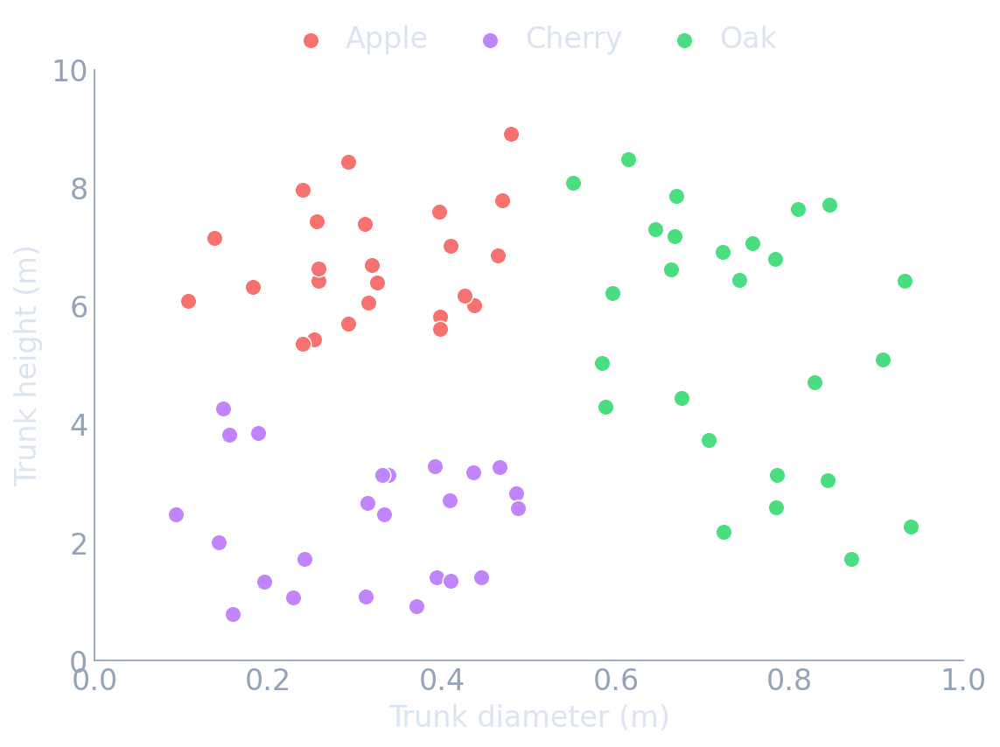
Carve the space with yes/no questions
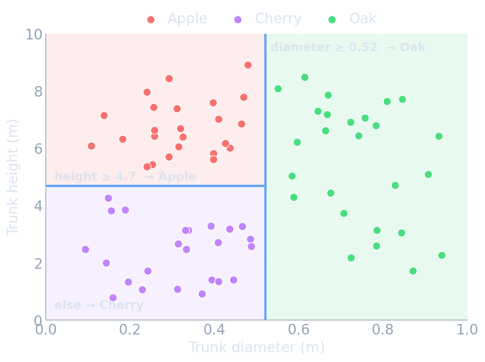
- First cut: diameter ≥ 0.52? → everything to the right is Oak.
- Second cut (left part only): height ≥ 4.7? → tall ones are Apple, short ones are Cherry.
- Each cut is a vertical or horizontal line — a question about one feature at a time.
- A new tree? Measure it, see which box it lands in, predict that box’s majority species.
…and that is literally a decision tree
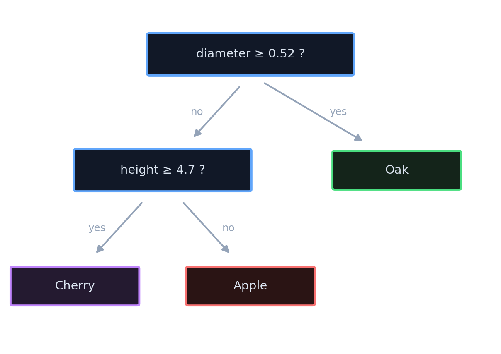
- Boxes on the previous slide ⇔ leaves here. Same model, two pictures.
- Internal node = a yes/no question on one feature.
- Leaf = a prediction (the majority class of the points that reach it).
- To classify a new tree, start at the top and follow the yes/no arrows down to a leaf.
Which question is best? Measure “purity”
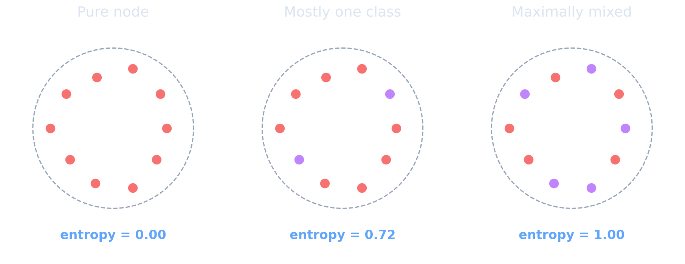
A node is pure if it holds one class, impure if it is a mix. Entropy (also Gini) puts a number on it: 0 = pure, larger = more mixed.
- A good question makes the resulting regions more pure than the parent.
- We will measure impurity with entropy \(-\sum_c p_c \log p_c\) or Gini \(\sum_c p_c(1-p_c)\) — formalised in a moment.
Pick the split with the biggest payoff
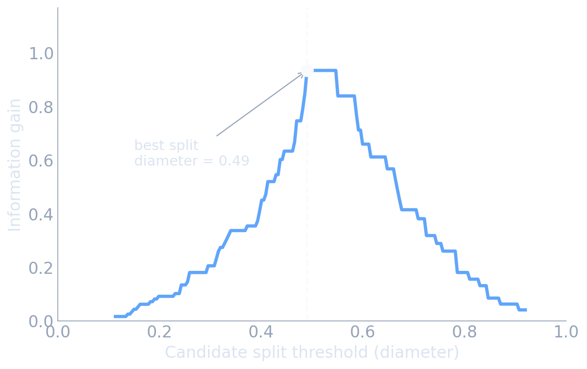
- Try every feature and every threshold; score each by the impurity it removes.
- Keep the single best split, then recurse on each child region.
- Greedy: best question now, no looking back — fast, but not globally optimal.
- The eye-balled “diameter ≈ 0.5” cut is the algorithm’s peak. The intuition was the math.
One tree is powerful — but fragile
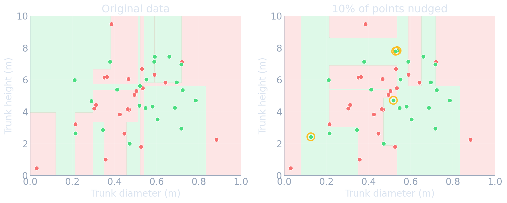
- A single deep tree can fit anything — including the noise (high variance).
- Small data changes → very different tree → the variance arrow on the board.
- The fix, the rest of this unit: average many trees (bagging / forests) and stack corrective trees (boosting).
- Hold onto this picture — it is why ensembles exist.
Decision trees — a single learner
A decision tree recursively partitions input space by axis-aligned splits.
- Internal node: a test like “Cr fraction \(> 0.18\)?”
- Leaf: a constant prediction — mean of the leaf’s targets (regression) or majority / class frequencies (classification).
- Prediction: route a new \(x\) down the tree to its leaf and return that constant.
- Non-parametric: model capacity grows with depth, not a fixed parameter count.
- Handles mixed feature types (continuous, ordinal, categorical) natively.
- Scale-invariant: splits depend only on order, so no normalization is needed.
- The learned function is piecewise constant — not smooth.
Trees partition feature space
- Each split is a hyperplane perpendicular to one feature axis.
- The leaves tile the input space into axis-aligned boxes (hyper-rectangles).
- The prediction surface is constant within each box and jumps at box boundaries.
- Consequence 1: trees capture feature interactions for free (a split on \(x_2\) inside a branch of \(x_1\) is an interaction).
- Consequence 2: trees are rotation-variant — a diagonal decision boundary needs a staircase of many splits.
- Consequence 3: a deep enough tree can isolate every training point in its own box → memorization.
How splits are chosen
At each node, pick the (feature, threshold) that maximizes impurity reduction:
\[ \Delta = I(\text{parent}) - \frac{N_L}{N} I(\text{left}) - \frac{N_R}{N} I(\text{right}). \]
- Regression: \(I =\) within-node variance → equivalently, squared-error reduction.
- Classification: \(I =\) Gini impurity \(\sum_c p_c (1 - p_c)\) or entropy \(-\sum_c p_c \log p_c\).
- The search is greedy and recursive: best split now, no backtracking.
- Cost \(\approx O(N\,d\,\log N)\) — fast, which is why trees scale to large tabular data.
Impurity measures: variance, Gini, entropy
Regression
- \(I_{\text{var}} = \frac{1}{N}\sum_i (y_i - \bar y)^2\).
- Maximizing variance reduction = minimizing within-leaf SSE = fitting leaf means by least squares.
Classification
- Gini: \(\sum_c p_c(1-p_c)\) — expected misclassification rate of random labeling.
- Entropy: \(-\sum_c p_c\log p_c\) — information content.
- Both are maximized at uniform \(p_c\), zero at a pure node.
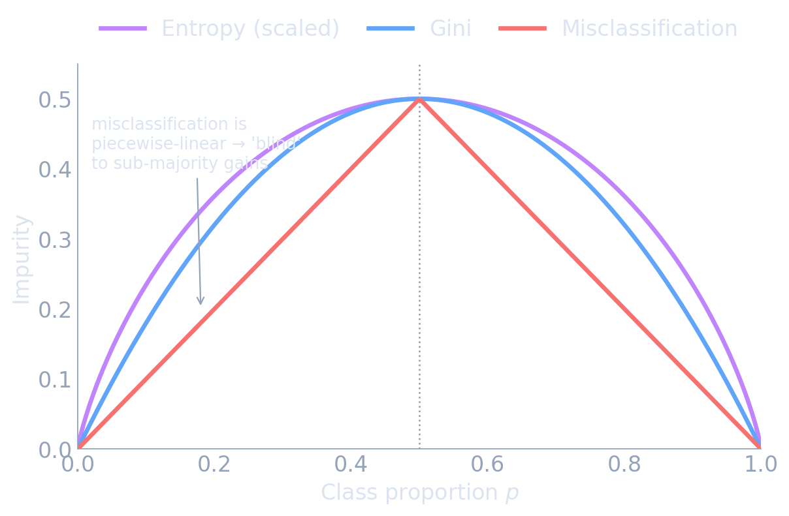
All three peak at \(p=0.5\) and vanish at pure nodes — but misclassification error is piecewise-linear, so it cannot reward a split that purifies a child without flipping its majority. Gini/entropy are strictly concave and can.
- Gini and entropy give very similar trees in practice; Gini is slightly cheaper (no log) and is the scikit-learn default.
- Misclassification error is not used for growing — it is insensitive to changes that don’t flip the majority class.
Growing and pruning a tree
- Grow: recurse until a stopping rule — max depth, min samples per leaf, or no positive impurity gain.
- An unconstrained tree grows until every leaf is pure → it memorizes the training set (zero training error).
- Pre-pruning (early stopping): cap depth / min-leaf-size. Cheap but myopic — a weak split may enable a strong one below it.
- Post-pruning (cost-complexity): grow fully, then prune back minimizing \(R_\alpha(T)=R(T)+\alpha|T|\) — error plus a penalty on the number of leaves.
A single tree is a high-variance learner
- Stop too early → underfit (high bias, low variance).
- Grow to pure leaves → near-zero training error (low bias, high variance).
- A small change in the training data can completely reshape a deep tree — the greedy top split flips and the whole structure changes.
- Pruning trades some variance for bias, but a single tree never escapes this instability.
This is precisely the regime where averaging helps. → Ensembles.
Strengths and limitations of a single tree
Strengths
- Interpretable (you can read the rules).
- No scaling / encoding ceremony; handles missing values.
- Captures interactions and nonlinearity automatically.
- Fast, \(O(N d\log N)\).
Limitations
- High variance / unstable.
- Piecewise-constant: no smooth extrapolation.
- Greedy → not globally optimal.
- Axis-aligned → diagonal structure needs many splits.
Interactive: tree depth controls the fit
- A 1D regression tree fit to noisy data \(y=\sin(2x)+0.3x+\varepsilon\).
- Drag max depth: depth 1 = one stump (high bias); large depth = a step for almost every point (high variance / memorization).
tree_data = {
tree_reseed;
const n = 60;
const rnd = d3.randomNormal(0, tree_noise);
const pts = [];
for (let i = 0; i < n; i++) {
const x = (i / (n - 1)) * 6;
pts.push({ x, y: Math.sin(2 * x) + 0.3 * x + rnd() });
}
return pts;
}
function buildRegTree(rows, depth, maxDepth) {
const ys = rows.map(d => d.y);
const mean = d3.mean(ys);
if (depth >= maxDepth || rows.length < 4) return { leaf: true, value: mean };
const xs = Array.from(new Set(rows.map(d => d.x))).sort((a, b) => a - b);
let best = null;
for (let i = 1; i < xs.length; i++) {
const thr = (xs[i - 1] + xs[i]) / 2;
const L = rows.filter(d => d.x <= thr);
const R = rows.filter(d => d.x > thr);
if (L.length < 2 || R.length < 2) continue;
const sse =
L.length * (d3.variance(L.map(d => d.y)) || 0) +
R.length * (d3.variance(R.map(d => d.y)) || 0);
if (best === null || sse < best.sse) best = { thr, sse, L, R };
}
if (best === null) return { leaf: true, value: mean };
return {
leaf: false,
thr: best.thr,
left: buildRegTree(best.L, depth + 1, maxDepth),
right: buildRegTree(best.R, depth + 1, maxDepth)
};
}
function predictTree(node, x) {
return node.leaf ? node.value : (x <= node.thr ? predictTree(node.left, x) : predictTree(node.right, x));
}
tree_fitted = {
const t = buildRegTree(tree_data, 0, tree_depth);
return d3.range(0, 6.001, 0.02).map(x => ({ x, y: predictTree(t, x) }));
}
Plot.plot({
width: 820, height: 430,
marginLeft: 60, marginBottom: 52, marginTop: 20,
style: {
background: "transparent",
color: "#e5edf7",
fontSize: "20px",
fontFamily: "Inter, sans-serif"
},
x: { domain: [0, 6], label: "x →", grid: true },
y: { domain: [-2, 3], label: "↑ y", grid: true },
marks: [
Plot.line(d3.range(0, 6.01, 0.05), { x: d => d, y: d => Math.sin(2 * d) + 0.3 * d, stroke: "#94a3b8", strokeDasharray: "4,4", strokeWidth: 2 }),
Plot.dot(tree_data, { x: "x", y: "y", r: 3.5, fill: "#60a5fa", fillOpacity: 0.55 }),
Plot.line(tree_fitted, { x: "x", y: "y", stroke: "#4ade80", strokeWidth: 3, curve: "step-after" })
]
})From one tree to many: the ensemble idea
- Averaging \(B\) predictors that are individually noisy but not making the same mistakes cancels their independent errors.
- For unbiased predictors, averaging leaves bias unchanged but shrinks variance.
- We need many trees that are (a) individually low-bias and (b) as decorrelated as possible.
- Two ways to build them: resample the data (bagging) and restrict the features (random forest).
Bootstrap sampling
- A bootstrap sample: draw \(N\) points from the training set with replacement.
- Each bootstrap sample contains \(\approx 63\%\) of the unique points; the rest are duplicated.
- The omitted \(\approx 37\%\) are out-of-bag for that tree — a free held-out set (used later).
- Different bootstrap samples → different trees → the decorrelation we need.
Bagging — variance reduction by averaging
Bootstrap aggregating (Breiman 1996):
- Draw \(B\) bootstrap samples (size \(N\), with replacement).
- Train one fully grown tree per sample (low bias, high variance).
- Predict by averaging: \(\hat f_{\text{bag}}(x)=\frac1B\sum_{b=1}^B \hat f_b(x)\) (regression) or majority vote (classification).
\[\mathrm{Var}\!\left(\tfrac1B\sum_b \hat f_b\right)=\rho\,\sigma^2+\frac{1-\rho}{B}\,\sigma^2.\]
As \(B\to\infty\) the second term vanishes; variance floors at \(\rho\sigma^2\).
The correlation ceiling
- Trees trained on bootstrap samples of the same data still pick the same dominant splits → highly correlated predictions (\(\rho\) large).
- Large \(\rho\) ⇒ the \(\rho\sigma^2\) floor is high ⇒ bagging alone gives only modest gains.
- To break the ceiling we must force the trees to be structurally different — not just trained on resampled data.
- Random forests do this by restricting the features each split may consider.
Random forest = bagging + random feature subsets
- At each split, search only a random subset of features (typical: \(\sqrt{d}\) for classification, \(d/3\) for regression).
- This decorrelates the trees (\(\rho\downarrow\)) → the \(\rho\sigma^2\) floor drops → averaging buys far more.
- Slight increase in individual-tree bias (each split sees fewer options), massively offset by the variance reduction.
- The de-facto default:
RandomForestRegressor/RandomForestClassifier(Breiman 2001).
With \(B\approx 500\) fully grown, feature-subsampled trees, RF is a strong, low-tuning baseline that usually crushes a single tuned tree.
See it: averaging smooths the boundary
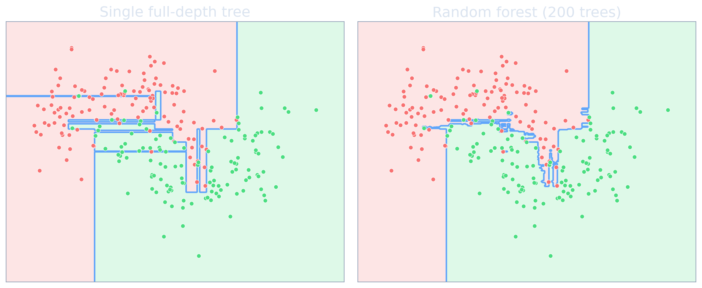
- Left = high variance: every noisy point gets its own box.
- Right = the same trees, averaged → the staircase washes out.
- The decision boundary barely moves if you resample the data — exactly the variance reduction the \(\rho\sigma^2\) formula promised.
- Bias is untouched; only the jitter is gone.
Interactive: the bagging variance ceiling
- Plot of ensemble variance \(\;\rho\sigma^2+\frac{1-\rho}{B}\sigma^2\;\) (with \(\sigma^2=1\)) vs number of trees \(B\).
- See the floor at \(\rho\sigma^2\): lowering correlation (what random forests do) is what actually buys you accuracy.
ens_var = (rho, B) => rho + (1 - rho) / B;
var_curves = {
const rows = [];
for (let B = 1; B <= 200; B++) {
rows.push({ B, v: ens_var(rho_a, B), kind: `Bagging (ρ=${rho_a.toFixed(2)})` });
rows.push({ B, v: ens_var(rho_b, B), kind: `Random forest (ρ=${rho_b.toFixed(2)})` });
}
return rows;
}
Plot.plot({
width: 1000, height: 700,
marginLeft: 80, marginBottom: 64, marginTop: 50,
style: {
background: "transparent",
color: "#e5edf7",
fontSize: "21px",
fontFamily: "Inter, sans-serif"
},
x: { domain: [1, 200], label: "Number of trees B →", grid: true },
y: { domain: [0, 1], label: "↑ Ensemble variance (σ²=1)", grid: true },
color: { legend: true, range: ["#f87171", "#60a5fa"] },
marks: [
Plot.ruleY([rho_a], { stroke: "#f87171", strokeDasharray: "4,4", strokeWidth: 1.5 }),
Plot.ruleY([rho_b], { stroke: "#60a5fa", strokeDasharray: "4,4", strokeWidth: 1.5 }),
Plot.line(var_curves, { x: "B", y: "v", stroke: "kind", strokeWidth: 3.5 })
]
})Out-of-bag (OOB) error
- Each tree’s bootstrap sample omits \(\approx37\%\) of points — its out-of-bag set.
- Predict each training point using only the trees that did not see it, then score.
- Result: a nearly free, CV-quality estimate of generalization error — no separate validation split needed.
- OOB curves vs \(B\) also tell you when adding trees has stopped helping.
Impurity (MDI) importance — what it measures
MDI = Mean Decrease in Impurity. Reuse the per-split gain \(\Delta\) from “how splits are chosen”: credit each feature with the impurity it removed, weighted by how many samples passed through that split, summed over every node and averaged across all \(B\) trees.
\[ \text{MDI}_j \;=\; \frac{1}{B}\sum_{b=1}^{B}\;\sum_{\substack{\text{nodes in tree }b\\\text{that split on }j}} \frac{N_{\text{node}}}{N}\,\Delta_{\text{node}}, \qquad \text{then normalized so } \sum_j \text{MDI}_j = 1. \]
- It is
feature_importances_in scikit-learn — free, computed during training, no extra passes. - Computed on the training set → it cannot tell “genuinely useful” from “useful for memorizing.”
- Cardinality bias: a continuous / high-cardinality column offers more candidate thresholds, so it wins more splits and accumulates spurious \(\Delta\) — even pure noise scores nonzero.
Feature importance — done right
Impurity (Gini/MDI) importance
- Sum of (sample-weighted) impurity reduction per feature across all splits and trees, normalized to 1.
- Free, but biased: inflates high-cardinality / continuous features and is unreliable under correlated features.
Better alternatives
- Permutation importance: shuffle one feature, measure the performance drop on held-out data (explained next). Model-agnostic, honest.
- TreeSHAP (Lundberg et al. 2020): exact Shapley values for trees — consistent, local + global.
For a materials paper claiming “feature X drives the property,” report permutation or SHAP, not raw impurity importance.
Permutation importance — how it actually works
It answers one question: how much does the trained model actually rely on this feature?
- Score the fitted model on a held-out set (e.g. \(R^2\) or accuracy) → baseline.
- Take one feature and randomly shuffle its column across rows. The column keeps its distribution but its link to the target is destroyed.
- Re-score the same model on the shuffled data.
- Importance = baseline − shuffled score — the bigger the drop, the more the model needed that feature.
- Repeat the shuffle a few times and average (it is random).
- Intuition: if scrambling a feature barely hurts, the model was not using it; if the score collapses, it was load-bearing.
- Model-agnostic: works for any fitted model (RF, GBM, neural net) — it only needs
predictand a score. - Computed on held-out data, so it cannot be fooled by training-set overfitting — the key advantage over impurity (MDI) importance.
- Caveat: two correlated features can share importance — shuffle one and its twin still leaks the signal, so both look weak. Group them, or use SHAP.
Example: impurity importance is fooled by noise
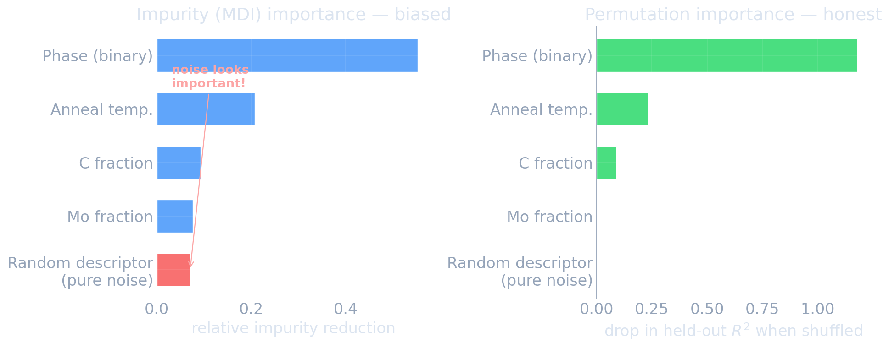
- Left (MDI): the random descriptor ranks alongside real Mo fraction — a red flag you would never catch from the bar chart alone.
- Right (permutation): the noise and the genuinely-useless Mo both drop to ≈ 0.
- Both panels agree the real driver is Phase, then anneal temp, then C.
- Lesson: never publish raw MDI as evidence that a feature “matters.”
Extremely randomized trees (ExtraTrees)
- Like a random forest, but the split threshold is chosen at random (not optimized) for each candidate feature.
- Even more decorrelation (\(\rho\) even lower) → lower variance, slightly higher bias.
- Often trains faster (no threshold search) and can match RF on noisy tabular data (Geurts, Ernst, and Wehenkel 2006).
- A useful second baseline to try alongside RF — one line to swap in scikit-learn.
Random forest in practice
- Hyperparameters that matter: number of trees \(B\) (more = better then flat), min samples per leaf, max features per split.
- Hyperparameters that mostly don’t: tree depth (let them grow), splitting criterion.
- Use OOB (or CV) to pick min-leaf and max-features; set \(B\) as large as your compute allows.
- Strong, robust, low-effort baseline — but for peak tabular accuracy, boosting usually wins (next).
Boosting — sequential bias reduction
- Bagging/RF: average many low-bias, high-variance trees in parallel → cut variance.
- Boosting: build a sequence of high-bias, low-variance weak learners (shallow trees), each correcting the previous ensemble’s errors.
- Additive model: \(\hat f^{(t)}(x)=\hat f^{(t-1)}(x)+\eta\,h_t(x)\).
- Bias falls as the ensemble grows — the opposite mechanism to bagging.
Bagging averages independent learners; boosting composes dependent ones.
AdaBoost — the original idea
- Maintain a weight on each training point; start uniform.
- Each round: fit a weak learner, up-weight the misclassified points, down-weight the correct ones.
- Final prediction: weighted vote of all weak learners, better learners weighted more (Freund and Schapire 1997).
- Reframed later (Friedman): AdaBoost is gradient boosting with an exponential loss — a special case of the general view next.
Gradient boosting — descent in function space
- Think of the predictor \(\hat f\) itself as the thing being optimized — not a parameter vector, but a function.
- We want to minimize \(\sum_i \mathcal{L}(y_i,\hat f(x_i))\). The steepest-descent direction at each point is the negative gradient of the loss w.r.t. the prediction.
- We cannot store an arbitrary function — so fit a tree to approximate that negative-gradient direction, and take a small step along it.
- Gradient boosting = gradient descent, where each step is a regression tree (Friedman 2001).
Gradient boosting — the algorithm
For loss \(\mathcal{L}\), at iteration \(t\):
- Pseudo-residuals: \(r_i^{(t)}=-\dfrac{\partial \mathcal{L}(y_i,\hat f^{(t-1)}(x_i))}{\partial \hat f^{(t-1)}(x_i)}\).
- Fit a small regression tree \(h_t\) to predict \(r_i^{(t)}\).
- Update: \(\hat f^{(t)}=\hat f^{(t-1)}+\eta\,h_t\).
\(\eta\) = learning rate (shrinkage). Small \(\eta\) + many trees generalizes better than large \(\eta\) + few.
See it: the ensemble builds up tree by tree
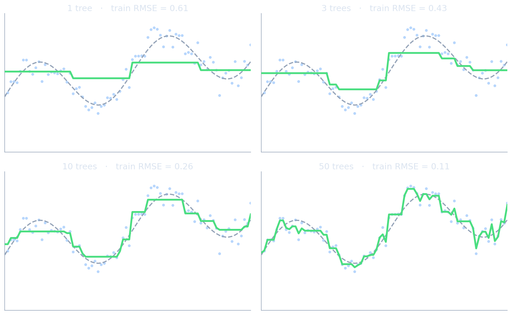
- 1 tree: one step — pure bias, just like a stump.
- 3–10 trees: the shape emerges as each tree fits the leftover residual.
- 50 trees: near-perfect on train — and beginning to wiggle on noise (variance creeping in).
- Bias falls monotonically; early stopping decides when to quit.
Pseudo-residuals — a worked example
Squared error \(\mathcal{L}=\tfrac12 (y-\hat f)^2\)
- \(-\partial\mathcal{L}/\partial\hat f = (y-\hat f)\).
- Pseudo-residual = ordinary residual.
- Each tree just fits “what the ensemble still gets wrong.”
Logistic / other losses
- The gradient gives a re-weighted target that focuses on hard, informative points.
- Same algorithm, only step 1 changes → boosting works for regression, classification, ranking, survival, custom losses.
Regularizing gradient boosting
Boosting can and will overfit — it drives training loss toward zero. Controls:
- Shrinkage \(\eta\): smaller steps, more trees — the primary regularizer.
- Number of trees + early stopping on a validation/OOB curve.
- Tree size: shallow trees (depth 3–6) cap interaction order and variance.
- Stochastic boosting: subsample rows and/or columns per tree (à la RF) → decorrelation + speed.
- Explicit penalties: L1/L2 on leaf values (XGBoost — next slide).
Interactive: boosting iterations × learning rate
- Gradient-boosted stumps on the same \(y=\sin(2x)+0.3x+\varepsilon\) data.
- Watch train vs validation RMSE: large \(\eta\) overfits fast; small \(\eta\) needs more rounds but generalizes better.
gb_all = {
const n = 70;
const rndTr = d3.randomNormal(0, 0.3);
const rndVa = d3.randomNormal(0, 0.3);
const tr = [], va = [];
for (let i = 0; i < n; i++) {
const x = (i / (n - 1)) * 6;
tr.push({ x, y: Math.sin(2 * x) + 0.3 * x + rndTr() });
const xv = ((i + 0.5) / n) * 6;
va.push({ x: xv, y: Math.sin(2 * xv) + 0.3 * xv + rndVa() });
}
return { tr, va };
}
bestStump = function (rows) {
const xs = Array.from(new Set(rows.map(d => d.x))).sort((a, b) => a - b);
let best = null;
for (let i = 1; i < xs.length; i++) {
const thr = (xs[i - 1] + xs[i]) / 2;
const L = rows.filter(d => d.x <= thr);
const R = rows.filter(d => d.x > thr);
if (!L.length || !R.length) continue;
const cL = d3.mean(L, d => d.r), cR = d3.mean(R, d => d.r);
let sse = 0;
for (const d of L) sse += (d.r - cL) ** 2;
for (const d of R) sse += (d.r - cR) ** 2;
if (best === null || sse < best.sse) best = { thr, cL, cR, sse };
}
return best;
}
gb_curves = {
const { tr, va } = gb_all;
const stumps = [];
let predTr = tr.map(() => 0);
let predVa = va.map(() => 0);
const rmse = (arr, pred) => Math.sqrt(d3.mean(arr.map((d, i) => (d.y - pred[i]) ** 2)));
const rows = [];
for (let t = 1; t <= gb_T; t++) {
const resid = tr.map((d, i) => ({ x: d.x, r: d.y - predTr[i] }));
const s = bestStump(resid);
if (!s) break;
stumps.push(s);
predTr = tr.map((d, i) => predTr[i] + gb_eta * (d.x <= s.thr ? s.cL : s.cR));
predVa = va.map((d, i) => predVa[i] + gb_eta * (d.x <= s.thr ? s.cL : s.cR));
rows.push({ t, e: rmse(tr, predTr), kind: "Train RMSE" });
rows.push({ t, e: rmse(va, predVa), kind: "Validation RMSE" });
}
return rows;
}
Plot.plot({
width: 820, height: 430,
marginLeft: 64, marginBottom: 52, marginTop: 44,
style: {
background: "transparent",
color: "#e5edf7",
fontSize: "20px",
fontFamily: "Inter, sans-serif"
},
x: { domain: [1, gb_T], label: "Boosting iteration →", grid: true },
y: { domain: [0, 1.2], label: "↑ RMSE", grid: true },
color: { legend: true, range: ["#60a5fa", "#f87171"] },
marks: [
Plot.line(gb_curves, { x: "t", y: "e", stroke: "kind", strokeWidth: 3.5 })
]
})XGBoost — the regularized objective
- Optimizes a second-order Taylor expansion of the loss at each step (uses gradient and Hessian) → better steps, principled leaf values.
- Adds an explicit complexity penalty: \(\Omega(h)=\gamma T+\tfrac12\lambda\lVert w\rVert^2\) (number of leaves \(T\), leaf weights \(w\)).
- Histogram-based split finding: bin features → near-linear-time training on large data.
- Native missing-value handling, column/row subsampling, parallel + GPU (Chen and Guestrin 2016).
This is why XGBoost, not plain gradient boosting, is the general-purpose tabular workhorse — and the most documented one.
CatBoost — the materials-tabular default
Three ideas, all aimed at categorical-heavy, modest-size tabular data (Prokhorenkova et al. 2018):
- Ordered target statistics: encode a category using only earlier rows’ targets → native categoricals, no target leakage, no manual one-hot.
- Ordered boosting: score each model on rows it did not train on → removes the prediction-shift bias all other GBMs carry.
- Oblivious (symmetric) trees: the same split across a whole level → strong implicit regularization + very fast inference.
- Best out-of-the-box accuracy with almost no tuning — the decisive property for non-experts.
- Native handling of the categoricals that fill materials data: alloy family, processing route, crystal system, phase.
- GPU support; robust on the few-hundred-to-tens-of-thousands-row regime typical here.
- Honest caveat: XGBoost has the larger ecosystem/docs; LightGBM is faster at very large \(N\).
For the typical materials problem, start with CatBoost. Reach for XGBoost as the general-purpose workhorse, LightGBM when \(N>10^6\).
LightGBM — when speed matters
- Leaf-wise growth: always split the highest-loss leaf (not level-wise) → faster loss reduction per tree.
- GOSS (gradient-based one-side sampling) + EFB (exclusive feature bundling) → trains fast on \(N>10^6\) and wide sparse data.
- Trade-off: leaf-wise trees can become deep and unbalanced → overfits small data; guard with
num_leavescap / largermin_data_in_leaf. - Same gradient-boosting framework as XGBoost — the difference is engineering, not theory (Ke et al. 2017).
A practical GBM tuning recipe
- Start: \(\eta=0.1\), depth 4–6, subsample 0.8, colsample 0.8, large
n_estimators. - Use early stopping on a validation set to pick the number of trees.
- Tune tree depth and min child weight (capacity) next.
- Lower \(\eta\) (e.g. 0.03) and raise
n_estimatorsfor the final model. - Tune L1/L2 leaf penalties last; re-confirm with cross-validation.
This recipe is mainly for XGBoost/LightGBM. CatBoost is usually near-optimal at its defaults — fit it first, only tune if it underperforms.
Trees vs neural networks on tabular data
Trees / boosting win when
- Tabular features (compositions, parameters).
- \(N \lesssim 10^5\) rows.
- Mixed types, missing values.
- Strong interactions, weak geometric structure.
- You need fast training + importances.
Neural networks win when
- Spatial / sequential / graph data.
- \(N \gg 10^5\).
- A pretrained foundation model exists (Unit 9).
- End-to-end from raw signals/images.
For most materials projects with tabular features: try gradient boosting first.
Why tree ensembles still beat deep learning on tabular
- Robust to uninformative features: trees ignore them via split selection; MLPs must learn to.
- Non-smooth targets: real tabular targets have sharp thresholds/jumps — piecewise-constant trees fit these naturally; smooth MLPs fight them.
- Rotation non-invariance is a feature: trees respect the original, meaningful axes (each column is a physical quantity); MLPs are rotation-invariant and waste capacity.
- Empirically confirmed across 45 datasets (Grinsztajn, Oyallon, and Varoquaux 2022).
See it: why rotation matters
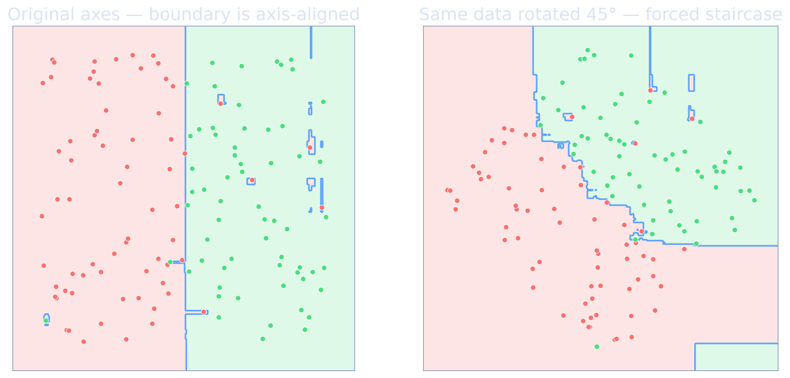
- Each column here is a physical quantity (at% Cr, anneal °C) — the informative cuts are axis-aligned.
- Trees exploit that for free; a rotation destroys it.
- A neural net is rotation-invariant — great for pixels, a liability when axes are meaningful.
- This is why “rotation non-invariance is a feature” for tabular data.
TabPFN — deep learning’s tabular comeback
- A transformer pretrained on millions of synthetic tabular tasks; does zero-shot prediction by taking the entire training set as a context window — no per-dataset training.
- As of 2025, competitive with tuned XGBoost on small (\(\lesssim 10\)k rows, \(\lesssim 100\) features) tabular problems (Hollmann et al. 2023).
- v2 adds regression; still bounded by context size — not a large-\(N\) replacement yet.
- The first credible deep-learning approach to tabular — worth a quick benchmark on new materials projects.
Interpreting tree ensembles
Global (whole model)
- Permutation importance — honest feature ranking.
- Partial dependence / ALE — average effect of one feature.
Local (one prediction)
- TreeSHAP (Lundberg and Lee 2017) — exact, additive per-feature attributions for a single sample; aggregates to a faithful global view too.
Ensembles trade a single tree’s readability for accuracy — SHAP/PDP buy back the interpretability that materials science and regulators require.
Materials example — alloy property prediction
- Dataset: 5000 alloys, 12 elemental fractions + 4 processing parameters → predict yield strength.
- Linear regression (quadratic features): \(R^2 = 0.62\) on held-out alloys.
- Random Forest (500 trees, \(\sqrt d\) features/split): \(R^2 = 0.84\).
- XGBoost (\(300\) trees, \(\eta=0.05\), depth 6): \(R^2 = 0.88\).
- Top SHAP features: Cr fraction, anneal temperature, C fraction, Mo fraction.
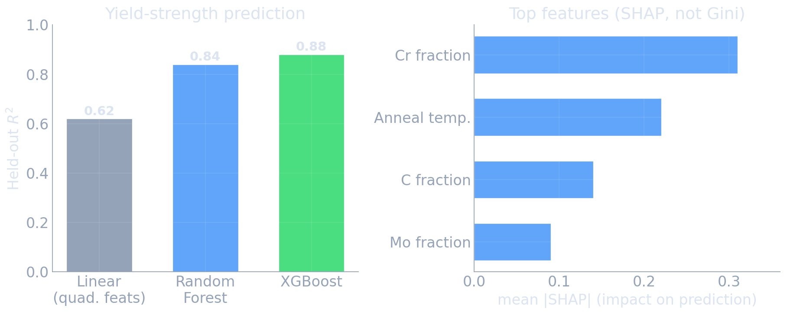
Typical pattern: tree ensembles add 10–20 points of \(R^2\) over linear models at essentially no engineering cost.
Which model when — a decision guide
- First baseline, any tabular problem: Random Forest (robust, OOB, importances, ~no tuning).
- Best tabular accuracy, typical materials data: CatBoost first (categorical-heavy, near-optimal at defaults); XGBoost as the general-purpose workhorse; LightGBM if \(N>10^6\).
- Small data (\(\lesssim 10\)k): also benchmark TabPFN.
- Images / spectra / sequences / graphs: neural networks (Units 9–13), not trees.
- Always: respect the train/val/test split, early-stop boosting, report honest (permutation/SHAP) importances.
Bias–variance summary across this unit
| Method | Bias | Variance | Mechanism |
|---|---|---|---|
| Single deep tree | low | high | flexible greedy partition |
| Bagging | low | reduced | average bootstrap trees |
| Random Forest | low | strongly reduced | + decorrelate via feature subsets |
| Gradient Boosting | reduced | medium | sequentially fit residuals |
| XGBoost (regularized) | reduced | controlled | + leaf penalty, shrinkage, early stop |
Unit summary
- A decision tree is a fast, interpretable, piecewise-constant partitioner — and a low-bias, high-variance learner.
- Bagging / Random Forest kill variance by averaging decorrelated trees; the correlation \(\rho\) sets the floor, which is why RF subsamples features.
- Gradient boosting is gradient descent in function space; it kills bias by sequentially fitting pseudo-residuals, controlled by shrinkage + early stopping.
- Gradient-boosted trees are the 2026 tabular default — CatBoost for the categorical-heavy materials data here, XGBoost as the general workhorse, LightGBM at large \(N\); trees beat NNs on tabular for concrete, understood reasons (TabPFN the emerging exception).
- Interpret with permutation importance / TreeSHAP, never raw impurity in a paper.
Common pitfalls and best practices
- Data leakage: target-derived features, or train/test split that ignores alloy/batch grouping → inflated scores.
- Over-trusting impurity importance as if it were causal — it is biased and not causal.
- No early stopping on boosting → silent overfitting.
- Forgetting trees ≠ extrapolation: predictions are flat outside the training range — dangerous for materials discovery in new composition regions.
- Over-tuning: defaults + early stopping beat a frantic grid search more often than students expect.
Lecture-essential vs exercise content split
- Lecture: tree mechanics + impurity, the bagging variance formula and the \(\rho\) ceiling, RF decorrelation + OOB, gradient boosting as functional gradient descent, regularization, model choice.
- Exercise: build a regression tree from scratch; RF vs single tree on alloy data with OOB; XGBoost with early stopping + a learning-curve sweep; permutation vs TreeSHAP importances; RF/XGBoost baseline on the alloy regression task.
Exam-aligned summary: must-know statements
- A decision tree partitions feature space into axis-aligned boxes via greedy impurity reduction.
- Regression impurity = within-node variance; classification = Gini or entropy (≈ equivalent).
- A single deep tree is low-bias, high-variance, and unstable.
- Bagging averages bootstrap trees: \(\mathrm{Var}=\rho\sigma^2+\frac{1-\rho}{B}\sigma^2\) → floor at \(\rho\sigma^2\).
- Random forest lowers \(\rho\) by random feature subsets per split — that is why it beats plain bagging.
- OOB error is a near-free generalization estimate from the ~37% unused points.
- Impurity importance is biased; use permutation or TreeSHAP, and never claim causality.
- Boosting reduces bias by sequentially fitting pseudo-residuals (= negative loss gradient).
- Gradient boosting = gradient descent in function space; \(\eta\) is its learning rate.
- Boosting overfits without early stopping; small \(\eta\) + many trees + early stop is the recipe.
- XGBoost adds a 2nd-order objective + leaf penalties (general-purpose workhorse); CatBoost (ordered target statistics + ordered boosting) is the near-zero-tuning default for categorical-heavy materials data.
- On tabular data trees usually beat NNs (uninformative features, non-smooth targets, axis meaning); TabPFN is the emerging small-data exception.
Continue
References + reading assignment for next unit
- Required reading before Unit 9:
- Murphy: Ch. 28 (representation learning) — skim the SSL chapter intro.
- Bishop: Ch. 12.1–12.3 (continuous latent variable models, PCA revisited).
- Optional depth:
- Hastie, Tibshirani & Friedman, ESL Ch. 9–10 & 15 (trees, boosting, random forests).
- Grinsztajn et al. 2022 — why trees beat deep learning on tabular data.
- Next unit: Latent Spaces & Advanced Representation Learning — t-SNE, UMAP, contrastive and self-supervised methods.
Breiman, Leo. 1996. “Bagging Predictors.” Machine Learning 24 (2): 123–40.
———. 2001. “Random Forests.” Machine Learning 45 (1): 5–32.
Chen, Tianqi, and Carlos Guestrin. 2016. “XGBoost: A Scalable Tree Boosting System.” In Proceedings of the 22nd ACM SIGKDD International Conference on Knowledge Discovery and Data Mining.
Freund, Yoav, and Robert E. Schapire. 1997. “A Decision-Theoretic Generalization of on-Line Learning and an Application to Boosting.” Journal of Computer and System Sciences 55 (1): 119–39.
Friedman, Jerome H. 2001. “Greedy Function Approximation: A Gradient Boosting Machine.” Annals of Statistics 29 (5): 1189–1232.
Geurts, Pierre, Damien Ernst, and Louis Wehenkel. 2006. “Extremely Randomized Trees.” Machine Learning 63 (1): 3–42.
Grinsztajn, Léo, Edouard Oyallon, and Gaël Varoquaux. 2022. “Why Do Tree-Based Models Still Outperform Deep Learning on Tabular Data?” Advances in Neural Information Processing Systems (NeurIPS), Datasets and Benchmarks Track. https://arxiv.org/pdf/2207.08815.
Hollmann, Noah, Samuel Müller, Katharina Eggensperger, and Frank Hutter. 2023. “TabPFN: A Transformer That Solves Small Tabular Classification Problems in a Second.” International Conference on Learning Representations (ICLR). https://arxiv.org/abs/2207.01848.
Ke, Guolin, Qi Meng, Thomas Finley, Taifeng Wang, Wei Chen, Weidong Ma, Qiwei Ye, and Tie-Yan Liu. 2017. “LightGBM: A Highly Efficient Gradient Boosting Decision Tree.” In Advances in Neural Information Processing Systems (NeurIPS).
Lundberg, Scott M., Gabriel Erion, Hugh Chen, Alex DeGrave, Jordan M. Prutkin, Bala Nair, Ronit Katz, Jonathan Himmelfarb, Nisha Bansal, and Su-In Lee. 2020. “From Local Explanations to Global Understanding with Explainable AI for Trees.” Nature Machine Intelligence 2 (1): 56–67.
Lundberg, Scott M., and Su-In Lee. 2017. “A Unified Approach to Interpreting Model Predictions.” In Advances in Neural Information Processing Systems (NeurIPS).
Prokhorenkova, Liudmila, Gleb Gusev, Aleksandr Vorobev, Anna Veronika Dorogush, and Andrey Gulin. 2018. “CatBoost: Unbiased Boosting with Categorical Features.” In Advances in Neural Information Processing Systems (NeurIPS).
Example Notebook
Week 8: Tree Ensembles — RF & XGBoost on alloy regression

© Philipp Pelz - Mathematical Foundations of AI & ML